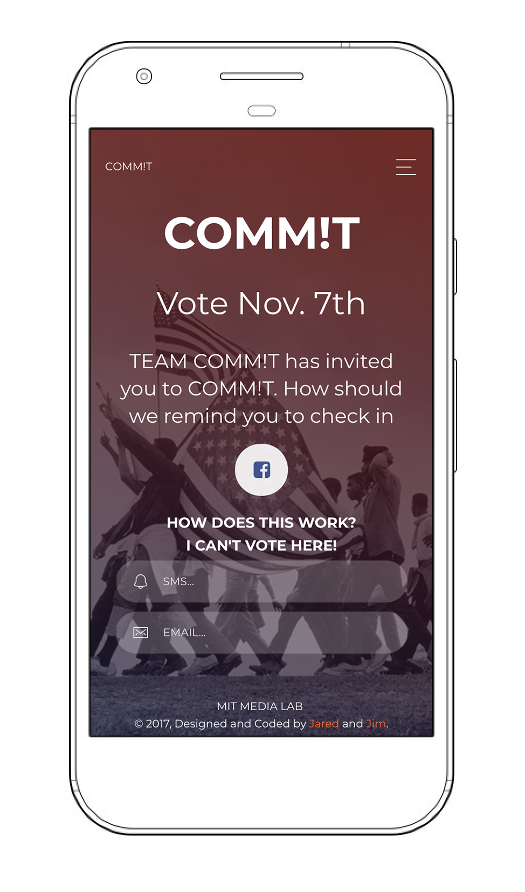
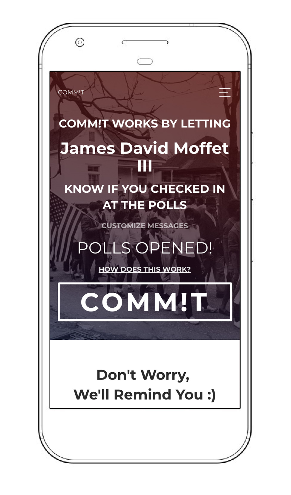
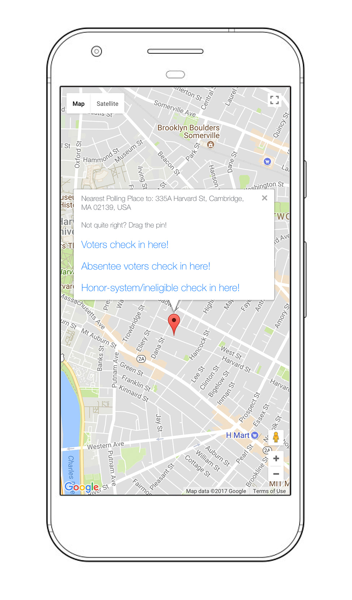

GPS and Peer-enforced Civic Commitment App
Visit Commit.Vote to check out the MVP.
  
The COMM!T web app keeps people accountable to their friends by publishing to a select group whether or not they checked in at the polls via GPS. COMM!T sends voters reminders with a check-in link that uses Google's Civic Data API to identify the appropriate polling place. Once a user clicks COMM!T, their group will be notified on election—whether they check in or not—and commitments cannot be revoked, though we provide a few backup options at check-in time to give users and their friends an opportunity to hash things out socially.
Collections
Research
Product
Civic Tech
Collection Credits
Boston FOIA Redesign
James Moffet
Erica Pincus
Jon Truong
Thad Kerosky
Jackie Chea
Outvote App
James Moffet
Nadeem Mazen
Naseem Makiya
Lizzie Devane
Critical Mass
James Moffet
Morgan Starkey
Alexander Tepper
All Else
James Moffet